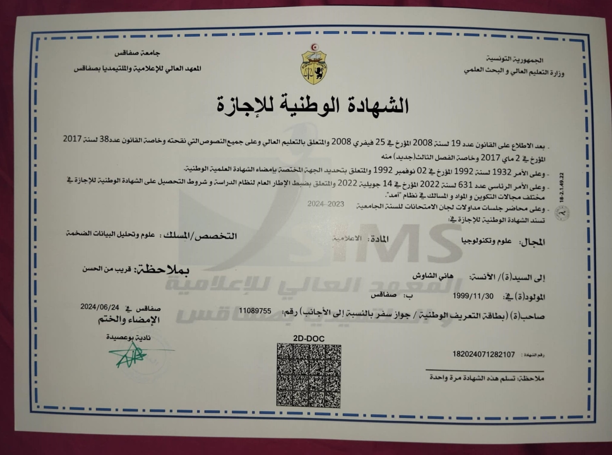

Parcours Académique
Bac technique
Diplôme obtenu en 2020, Bac Technique, lycée Ibn Rachik, Sfax.

Licence en Informatique
Spécialité Big Data et Analyse de Données. Diplôme obtenu en 2024, ISIMS, Sfax.

1ère année Ingénieur
1ère année Ingénieur en IIT : L'Institut International de Technologie, spécialité Informatique.